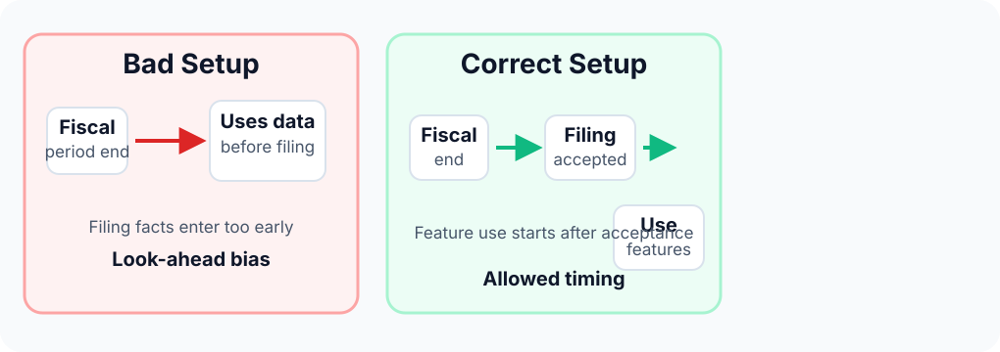
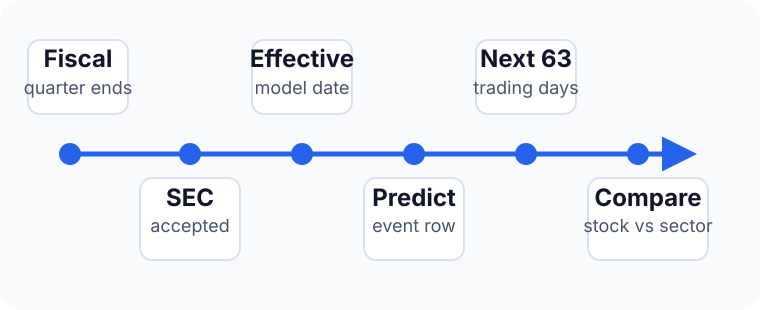
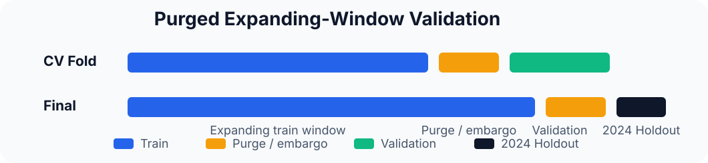
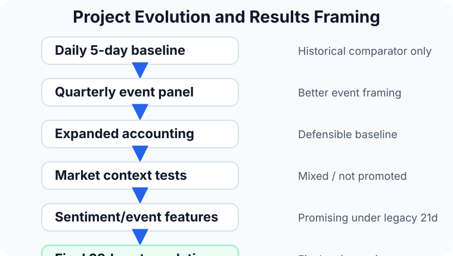
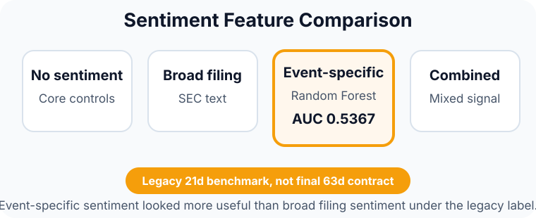

Sentiment-Augmented Quarterly Stock Prediction
A leakage-aware supervised learning pipeline for predicting 63-day sector-relative stock performance
Thesis: This project tests whether accounting fundamentals, market context, and sentiment/event-specific features can predict whether a stock will outperform its sector after a quarterly filing event.
Why This Problem Is Difficult
Financial prediction is noisy and vulnerable to look-ahead bias. The project focuses on building a fair event-level experiment, not simply maximizing accuracy.
- No random train/test splits; no future information.
- No post-filing facts before they become tradable.
Leakage Control

Research Question & Data
Can we predict 63-day sector-relative outperformance after a quarterly filing?
| Source | Role |
|---|---|
| SEC EDGAR | Fundamentals, 10-Q/10-K text |
| Prices | Returns & volatility |
| Alpha Vantage | EPS surprise, revisions |
| Capital IQ | Sector context |
Modeling Pipeline

Feature Design & Target

Event Timing

Validation

5-fold purged expanding-window CV, 2024 holdout, 5-day embargo.
What the Experiments Showed

Selected Benchmark Evidence
63d Stability (XGBoost)
CV AUC: 0.5262 | Holdout: 0.4880
Legacy 21d Sentiment (RF)
Holdout AUC: 0.5367 (not final)


Main Findings
- Quarterly filing events are a better modeling unit than daily rows.
- Leakage control is central to the project.
- Fundamentals created a defensible baseline; generic market features didn't consistently improve it.
- Event-specific sentiment was promising.
Conclusion & Next Steps
The project demonstrates a leakage-aware research framework rather than a finished trading strategy. Predictive signal is currently modest and unstable.
Next: complete the 63d rerun, add higher-quality data, expand sentiment, and defer portfolio construction until signal stability improves.